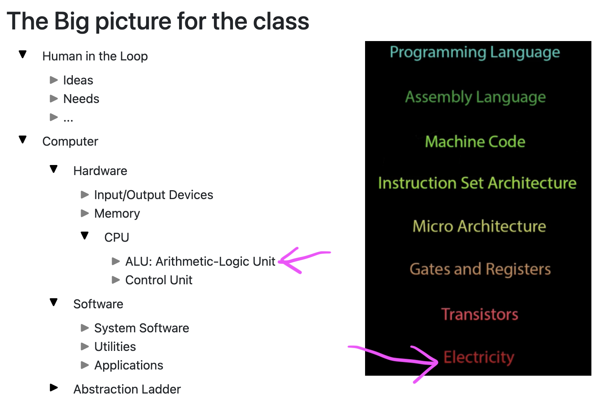
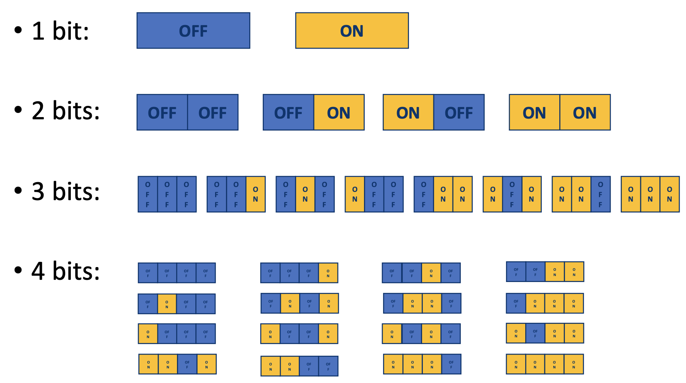
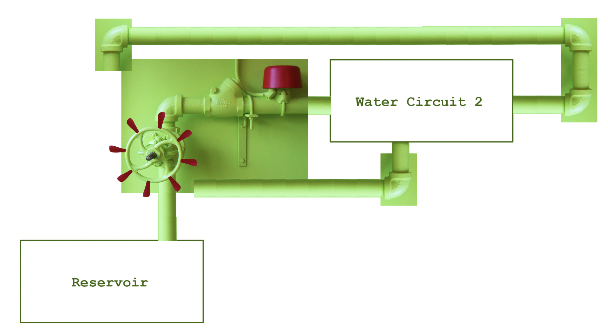
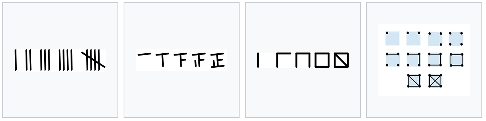
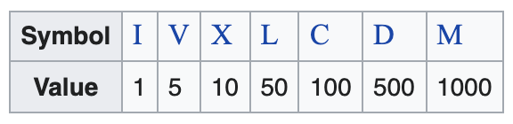
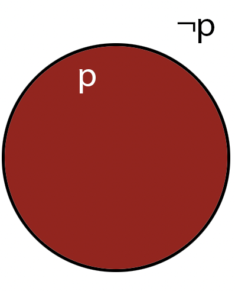
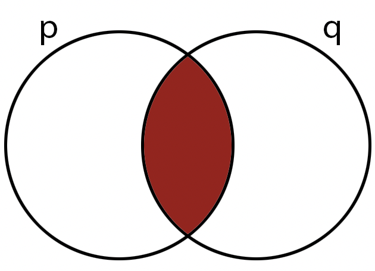

Lecture Notes 02:
Bits, Binary, and Number representation
Outline
This class we'll discuss:
- Review: Evolution of computing
- The minimum amount of knowledge
- Information atoms
- What can we do with bits?
- Number Systems
- Binary
- Binary arithmetic
- Binary logic

For now, we're looking at the "what?" not the "how?"
Evolution of computing system
An example problem: calculate the trajectory of a missile.
- Paper, pencil & brain: several days to a few weeks
- Gears & levers: several hours to a few days (including set-up)
- Switches, relays, shafts, and clutches: a few hours (including set-up)
- Voltages & logic circuits (ENIAC): 15 seconds (once set-up, which could take hours or days)
- Voltages & logic circuits (MacBook Pro): several \(ns\) to a few \(\mu s\) (study your prefixes)
So
why move from humans to machines? ...
Automation!
And
why move from gears to electricity? ...
SPEED!
(and size).
And
why move from analog to digital? ...
Precision!
Let's talk about how this electricity-based machine stores and uses data.
The minimum amount of knowledge
Moving gears takes a lot of energy and is slow.
Also, analog machines suffer from non-ideal effects (inaccuracy, loss, leaks, friction, etc).
What we want is a medium that moves fast and is energy efficient.
(and allows us to perform error correction!)
Electricity is that medium.
However, we need to be able to satisfy some requirements!
List of Requirements:
- Represent and Save information
- Solve mathematical and logical expressions
- Accept input
- Make decisions according to input or stored information
- Produce output
Activity 1 :[2 minutes] : how do we do these things with an Abacus?
Lets start with:
representing and saving information
When thinking about representing and saving information, we'd like to answer the following questions:
- What types of information should we be able to save?
- How should we structure this information in order to save it efficiently?
- What is the amount of information we can (want to) save?
- What is the minimum amount possible?
Activity 2 :[2 minutes] : Let's start with the fourth question:
What is the minimum amount possible? Or in other words: What is the minimum you can know about a thing?
One possible answer:
(Wait; then Click)
is it there? (AKA: "To be or not to be" ... -Shakespeare, the information theorist)
Information atoms: bits
A yes/no piece of data is the minimum you can know about a thing. It simply answers the question:
"is there or not something there?""
Anything that has two parts or two sides is called binary, so this piece of information is called a binary datum (a single piece of data), which could be represented with any two symbols:
- No/Yes
- False/True
- OFF/ON
- \( \bullet\) / \(\boldsymbol{-}\)
- 0/1
The term
bit is derived from
binary digit, a logical state (relation between a proposition and the truth) with one of two values.
It is common to represent these with \( 0 \) and \( 1 \), but as you can see below, we can use another approach (OFF/ON) with the same results.
Multiple bits
We've seen that a bit can represent something being there or not.
Activity 3 :[2 minutes] : how do we represent many things being there or not?
What examples could you come up where this is useful?
One possible answer:
(Wait; then Click)
Think of the problem of describing which rooms are lit up in a house.
We can have sequences of bits! each representing the presence of a different thing or state:

(image by Shinyoung Cho)
With this in mind, how do we save information using electricity?
Fast Water and Pipes: an analogy for an electric computer
To explain how we do this, we'll use an analogy with water and pipes, which contains:
- a water reservoir
- valves
- water circuits

Activity 4 :[2 minutes] : how do we represent information (a bit) using water?
One possible answer:
(Wait; then Click)
if we look at a pipe or a container with input and output ports, we could ask:
- How much water is in there?: that points at an analog "quantity", which as we said before, suffers from some issues.
- But more importantly: is there water in it?
So, to get a bit, we ask: "is there water flow through this pipe?"
We get a Yes/No answer.
By the way, you can actually build a
water computer in
several ways, however, it is not very fast and it might not be consistent long term.
Now the question is,
what can we represent with that information representation?
We'll come back to the water analogy, but first, let's think about information in the abstract.
Activity 5 :[2 minutes] : can we represent the following information using bits?
- A yes/no piece of information (Also called a Boolean value)
- numbers
- letters
- images
- sound
- video
answer:
(Wait; then Click)
YES!
But how!?
Number representation
There are many different ways of representing numbers:
Activity 6 :[2 minutes] : why would we want to "represent" a number?
One possible answer:
(Wait; then Click)
Because carrying around the actual "things" you count is out of the question for most "things".
With representation you can say "I'm so hungry I could eat a million apples!" without actually having to doing it to transmit the idea.
From early representation, we've used different sounds (grunts \( \rightarrow \) words) to refer to numbers, and different symbols so that we can write them out.
Tally Marks
One of the easiest representations is using tally marks, like any of these:

Why could that be an issue?
Grouping Symbols
These employ several different symbols, each with a different value.
Numbers are constructed by placing the "largest" value symbols possible until the full amount is represented.
More advanced approaches used the
position of the symbol to vary the value slightly.
One exampe of these is the
Roman numerals:

Why could that be an issue?
Positional Number System
The genius of this approach is that you can
reuse any number of symbols and give greater significance to their position when grouped together.
Decimal
Note that
decimal is a positional system with the symbols: 0, 1, 2, 3, 4, 5, 6, 7, 8, and 9;
The position change indicates "ten times as many as before" ("or a tenth as before"). We call these "powers of 10".
The number is constructed by indicating "how many times we need each power of 10" (that's what base 10 means):
\[ 1729 = 1*10^3 + 7*10^2 + 2*10^1 + 9*10^0 = 1000 + 700 + 20 + 9 \]
Binary
The
binary system is a positional number system with two symbols: 0 and 1;
the number is constructed by indicating "how many times we need each power of 2" (that's why base 2) using only the valid symbols:
\[
\begin{alignat}{2}
0b11011000001 &=& \: 1*2^{10} \: & + & \: 1*2^9 \: &+& \: 0*2^8 &+& \: 1*2^7 \: &+& \: 1*2^6 \: &+& \: 0*2^5 \: &+& \: 0*2^4 \: &+& \: 0*2^3 \: &+& \: 0*2^2 &+& \: 0*2^1 \: &+& \: 1*2^0 \: & &\qquad\\
\qquad &=& \: 1024 \: & + & \: 512 \: &+& \: 0 &+& \: 128 \: &+& \: 64 \: &+& \: 0 \: &+& \: 0 \: &+& \: 0 \: &+& \: 0 &+& \: 0 \: &+& \: 1 \: &=& \: 1729
\end{alignat}
\]
The first 8 natural numbers (starting at 0) are:
| decimal |
binary |
| 0 |
000 |
| 1 |
001 |
| 2 |
010 |
| 3 |
011 |
| 4 |
100 |
| 5 |
101 |
| 6 |
110 |
| 7 |
111 |
Notation: To indicate that we're writing a binary number, we usually
prepend "0b" to the number, so the binary number:
101010 should be written
0b101010 to distinguish it from "one hundred and one thousand and ten".
You might also see this as 101010b.
Activity 7 [3 minutes]:
Translate your birthday to binary.
example: 02/29/2020 (Yak's birthday) would be 0b10/0b11101/0b11111100100
hint: try dividing by the maximum power of 2 you can fit. Then continue with the remainder.
Hexadecimal
The last useful positional system we'll use in this class is
hexadecimal.
The
hexadecimal (or
hex) system is a positional number system with 16 symbols: 0-9 plus a, b, c, d, e, and f;
the number is constructed by indicating "how many times we need each power of 16" (that's why base 16) using only the valid symbols.
\[ 6C1 = 6*16^2 + C*16^1 + 1*16^0 = 6*16^2 + (12)*16^1 + 1*16^0 = 1536 + 192 + 1 = 1729\]
Notation: To indicate that we're writing a hex number, we usually
prepend "0x" to the number, so the hex number:
1234 should be written
0x1234 to distinguish it from "one thousand, two hundred and thirty four".
Activity 8 [Group; 3 minutes]:
Translate this number to hex: 3735928559
hint: try dividing by the maximum power of 16 you can fit. Then continue with the remainder.
Binary Arithmetic
Any operation we can do with decimals, we can do with binary.
Addition
\[
\begin{aligned}
0b1011&\\
+ 0b1001& \\
\hline
0b10100&
\end{aligned}
\]
Note that we can keep track of the
carry in order to get the proper addition:
\[
\begin{aligned}
\texttt{carry:}\mathit{1011} \texttt{ }&\\
\texttt{A: } 1011&\\
+ \texttt{ B: } 1001& \\
\hline
\texttt{Out: }10100&
\end{aligned}
\]
Activity 9 [Group: 1 minute (if we have time)]:
- Add 0b1011 + 0b1111
- Add 0b1110 + 0b1011
Subtraction
Subtraction is tricky because the way we represent negative numbers.
You can solve it in two ways:
-
"borrowing" from the digit on the left (instead of "carrying"):
\[
\begin{aligned}
0b1 1 0 1 1 1 0&\\
- 0b1 0 1 1 1& \\
\hline
0b1 0 1 0 1 1 1&
\end{aligned}
\]
- Using a "complement" approach: instead of subtracting, add the "additive complement".
The result is calculated like this:
\[ A - B = A + (B \text{'s two's complement }) + 1 \]
In practice, this looks like this:
\[
\begin{align*}
0b0111& \rightarrow & 0b0111& & &\qquad\\
-0b0001& \rightarrow & + \mathit{0b1111}& & &\qquad\\
\hline
0b0110& \qquad & 0b\mathbf{1}0110& \rightarrow & &\mathbf{0b0110}
\end{align*}
\]
With this approach, we disregard any carry 1s generated by the addition of 1.
Logical Operators
Logical operations refer to operations on variables that can contain truth values: true and false, usually denoted 1 and 0, respectively.
Think of these as operations on the "truth-value of a statement".
NOT
NOT is an operation that can be applied to a single bit; since the operation applies to a "single" operand,
it is called a
unary operation.
When
NOT is applied to a single bit (lets call it
p), we can get the following table:

Note that we're labeling on the outside for clarity, but the label refers to the interior of each circle
Note that, if \(p\) denotes the operand, \(\text{NOT } p\) can be written as \(\sim p\), \(\neg p\), \(\bar{p}\) or even \(!p\).
OR
OR (AKA: the disjunction operator) is an operation that is applied to pairs of operands,
it is called a
binary operation.
it is true if any of its operands is true.
| p |
q |
p OR q |
| 0 |
0 |
0 |
| 0 |
1 |
1 |
| 1 |
0 |
1 |
| 1 |
1 |
1 |

Note: other symbols you might see are: \( p\lor q \text{, } p+ q \text{, } p\mid q \).
AND
AND (AKA: the conjunction operator) is a
binary operator;
it is true if and only if both of its operands are true.
We can show the effect of this operator using a table:
| p |
q |
p AND q |
| 0 |
0 |
0 |
| 0 |
1 |
0 |
| 1 |
0 |
0 |
| 1 |
1 |
1 |

Note that we're labeling on the outside for clarity, but the label refers to the interior of each circle
Note: other symbols you might see are: \( p \wedge q \text{, } p\cdot q \text{, } p\&q \).
Examples
Activity 10 [Group: 1 minute (if we have time)]:
What is the result of the following assertions (what do they depend on?):
- I will go play tennis if it is sunny AND I finish grading;
- I will go play tennis if it is mountain day OR I finish grading;
- I will go play tennis if it is NOT raining;
It turns out that AND, OR, and NOT are necessary and sufficient to implement
any boolean function.
Before next class (Thursday 09/09)
[Optional]
- Review the class notes
- Come to online OHs; bring questions, jokes, or simply come and listen.
1-Minute Debrief
Please fill this out before leaving: